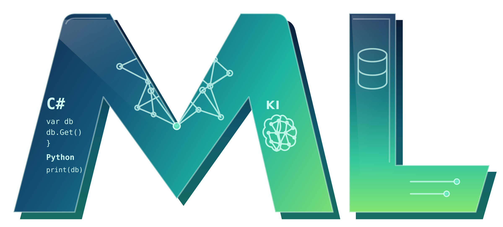
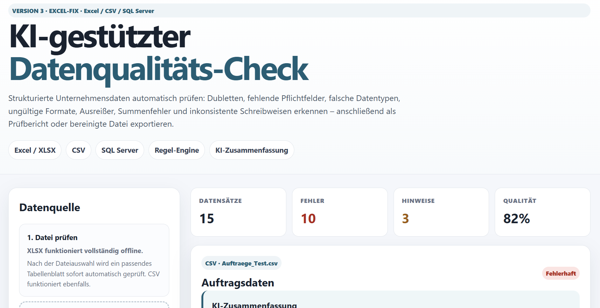

Für Auftraggeber
Freiberufliche Projekte
Individuelle Softwareentwicklung, SQL Server, Schnittstellen und KI-Integration. Vom abgegrenzten Vorhaben bis zur technischen Unterstützung bestehender Teams.
Projekt anfragenKI-Experte · Nürnberg & Remote
Ich verbinde KI-Integration mit über 25 Jahren Software- und Datenbankpraxis. Für die Modernisierung und Automatisierung bestehender Unternehmenssysteme – freiberuflich oder in Festanstellung.

Für klar umrissene Projekte oder eine passende Festanstellung mit Verantwortung im Team.
Für Auftraggeber
Individuelle Softwareentwicklung, SQL Server, Schnittstellen und KI-Integration. Vom abgegrenzten Vorhaben bis zur technischen Unterstützung bestehender Teams.
Projekt anfragenFür Arbeitgeber & Recruiter
Erfahrene Mitarbeit in Softwareentwicklung, Datenbankentwicklung und technischer Systemintegration. Offen für eine passende Position, in der ich meine Erfahrung langfristig einbringen kann.
Berufsprofil ansehenMeine Leistungen
Von der ersten Idee bis zur Integration: Wir wählen den Ansatz, der zu Ihrer Aufgabe, Ihren Daten und Ihren Abläufen passt.
Informationen aus Geschäftsdokumenten erschließen, Rechnungen vorprüfen und Daten strukturiert weitergeben – für weniger manuelle Zwischenschritte.
KI-Funktionen mit Ihren Anwendungen, Schnittstellen und Datenbanken verbinden. C#/.NET und SQL Server bilden dafür ein gewachsenes technisches Fundament.
Geeignete Anwendungsfälle erkennen, Werkzeuge an eigenen Aufgaben erproben und einen passenden Einstieg entwickeln – persönlich und verständlich.
Datenqualität bleibt das Fundament. Ich unterstütze Sie auch bei SQL Server, Datenmigration und der Bereinigung vorhandener Datenbestände.
Datencheck ansehenPraxisprojekte
Ausgewählte Projektbeispiele zeigen, wie ich KI mit Unternehmensprozessen und Daten verbinde. Der jeweilige Entwicklungsstand ist ausgewiesen.
Unternehmensprozesse erfassen, geeignete KI-Anwendungsfälle erkennen und ihren wirtschaftlichen Nutzen anhand nachvollziehbarer Annahmen bewerten. Die Analyse bereitet eine priorisierte Roadmap für die nächsten Schritte vor.
Ein modularer Beschaffungsassistent führt Artikel, Lagerbestände und Bezugsquellen zusammen. Die aktuelle Demo berechnet Fehlmengen und vergleicht fiktive Lieferanten nach Gesamtkosten und Lieferzeit.
Dokumentinformationen erfassen, strukturieren und zur Weiterverarbeitung bereitstellen. Die Anbindung wird auf das jeweilige Zielsystem abgestimmt.

Dubletten, fehlende Angaben und unplausible Werte in Excel- und CSV-Daten mit nachvollziehbaren Regeln erkennen – als Grundlage für Import, Migration und Reporting.
Die ersten beiden Beispiele beschreiben den angestrebten Funktionsumfang. Einzelne Funktionen sind noch nicht durchgängig umgesetzt. Weitere Beispiele zeigen eigene Anwendungen und Demos.
Qualifikationen, Abwesenheiten und Maschinenbedarf gemeinsam betrachten und offene Bedarfe in einem Planungsbeispiel sichtbar machen.
Wiederkehrende Fehlermuster und zeitliche Zusammenhänge in technischen Meldungen sichtbar machen.
Ablage, Suchbarkeit, Berechtigungen und Medienbrüche als zusammenhängenden Dokumentenprozess betrachten.
Stellenanforderungen mit einem Kurzprofil vergleichen und einen prüfbaren Bewerbungstext-Entwurf vorbereiten.
KI gemeinsam in die Praxis bringen
Sie möchten KI einsetzen und suchen einen sinnvollen Einstieg? Gemeinsam betrachten wir Ihre Aufgaben, wählen einen geeigneten Anwendungsfall und erproben einen überschaubaren Lösungsansatz.
Einstieg besprechenPersönliche Beratung und Praxisworkshops · remote oder nach Vereinbarung vor Ort
Aufgaben, Daten und bestehende Abläufe gemeinsam betrachten. Nutzen, Machbarkeit und Anforderungen klären.
Werkzeuge an einer konkreten Aufgabe ausprobieren. Ergebnisse und Grenzen prüfen und Erfahrungen für die weitere Umsetzung sammeln.
Den passenden Ansatz in Ihre Anwendungen und Datenflüsse einbinden. Nachvollziehbar umgesetzt, geprüft und dokumentiert.
— LEGACY CHECK
Delphi-, Access- oder VBA-Anwendungen sind oft geschäftskritisch – auch wenn das Wissen über ihre Struktur mit der Zeit verloren geht. Ich analysiere den vorhandenen Code und die Abhängigkeiten und liefere eine verständliche Entscheidungsgrundlage: weiterbetreiben, gezielt verbessern oder schrittweise modernisieren.
Über mich & Berufsprofil
Ich bin Manfred Linner, KI-Experte und Diplom-Informatiker (FH). Meine Erfahrung verbindet Softwareentwicklung, Datenbanken und die Betreuung bestehender Unternehmenssysteme.
Meine Weiterbildung zum KI-Manager schließe ich derzeit ab. Die Zertifizierung folgt im November 2026.
Seit über 25 Jahren entwickle ich individuelle Software. Seit 2018 arbeite ich selbstständig im Umfeld der öffentlichen Verwaltung; seit November 2024 gehört auch die zusätzliche Datenbankadministration zu meinen Aufgaben. Davor habe ich unter anderem an industriellen Track-&-Trace-Systemen im Pharmaumfeld gearbeitet.
Dieses Wissen verbinde ich mit praktischer KI-Arbeit und Automatisierung. Mich interessiert, wie aus einer technischen Möglichkeit eine Lösung wird, die zu den vorhandenen Systemen und den Menschen im Unternehmen passt.
KI-Werkzeuge in meiner Arbeit
ChatGPT / OpenAI · Claude · Gemini · Codepilot · Pollo.ai · n8n
Ich verbinde über 25 Jahre Software- und Datenbankpraxis mit KI-Integration und Automatisierung. Meine Schwerpunkte: C#/.NET, SQL Server und die Modernisierung bestehender Systeme.
Ich analysiere Zusammenhänge, entwickle praxistaugliche Lösungen und dokumentiere nachvollziehbar. Für freiberufliche Projekte und passende Festanstellungen.
Berufliche Erfahrung
Öffentlicher IT-Dienstleister
Langjährige Entwicklung und Betreuung von Fachanwendungen und SQL-Server-Umgebungen. Aufgaben: C#/.NET-Entwicklung, Schnittstellen, Reporting, Datenmigration. Seit November 2024 zusätzlich Datenbankadministration: Versionsupdates, Backup/Restore, Berechtigungen, Fehleranalyse.
Pharma & industrielle Track-&-Trace-Systeme
Softwareentwicklung für Seriennummernverfolgung und Compliance in der Pharma- und Tabakindustrie. C#, ASP.NET, Delphi, SQL Server; Geräteschnittstellen, GAMP-Dokumentation, Inbetriebnahmen im In- und Ausland.
Weitere Stationen – ERP, Automatisierung, Webentwicklung
Stationen bei DATEV, Funkwerk plettac electronic, Siemens und weiteren Unternehmen. Themen: ERP-/CRM-Systeme, industrielle Automatisierung, Webentwicklung, WPF/WCF, C++, Delphi, SQL Server und PostgreSQL.
Kontakt
Sie suchen Unterstützung für ein Projekt oder möchten eine Position besprechen? Schreiben Sie mir kurz, worum es geht.